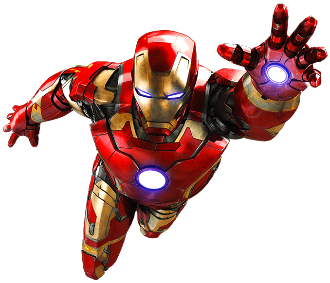
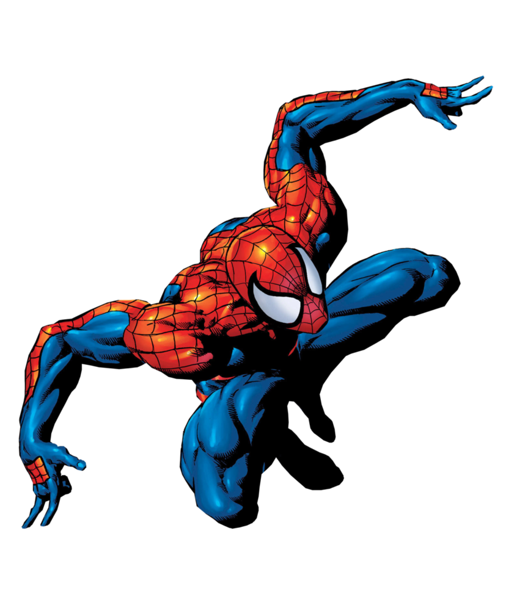

Aprenda HTML5 e CSS3 de forma simples e prática, desenvolvendo um site responsivo do "zero"
Deadpool
Deadpool foi introduzido pela primeira vez nos quadrinhos Novos Mutantes #98, em 1991. O misterioso assassino profissional, teria sido contratado para assassinar Cable e os X-Force. Vestido com seu uniforme icônico vermelho e preto e armado com suas duas espadas, Deadpool estava ainda longe de ser o mercenário que conhecemos hoje. Aqui, ele era um vilão sombrio e ameaçador e, apenas mais tarde, para se distanciar de Exterminador da DC, é que ele viria a se transformar no anti-herói psicótico e de humor perverso que nós tanto gostamos.
botão 1 Ironman
O herói ferroso foi criado por Stan Lee e estreou em 1963 nas HQs. O primeiro longa adaptado às telonas, Homem de Ferro, possui pouca (quase nenhuma) influência do universo Ultimate. A origem do personagem é basicamente a mesma acompanhada por nós leitores anos atrás, com algumas diferenças sutis, como a atualização de seus captores para terroristas afegãos. Na história original, Stark, durante um teste de um traje de combate para aumentar as habilidades de seu usuário, é atingido acidentalmente por um estilhaço de granada no peito. Quando feito prisioneiro pelo líder rebelde Wong Chu, é obrigado a construir uma arma de destruição em massa em troca da cirurgia que salvaria sua vida. Ele conhece então Ho Yinsen, físico vencedor do Prêmio Nobel, também aprisionado, que o ajuda na construção de um exoesqueleto fortemente armado e também projeta a famosa placa usada por Stark no peito para manter seu coração ativo. Entretanto, durante a fuga do cativeiro, Yinsen dá a própria vida para que o bilionário possa escapar ileso. De volta aos EUA, Stark redesenha o traje, cria o Homem de Ferro e inventa a história de que ele era apenas seu guarda-costas (fato pouco aproveitado no filme), e inicia um vida dupla como playboy e herói fantasiado nas horas vagas. No começo, ele luta apenas contra espiões e agentes estrangeiros interessados em roubar seus segredos militares, mas, com o passar do tempo, expande sua atuação para ameaças nacionais e internacionais. É um dos membros fundadores da equipe dos Vingadores e, na pele de Stark, patrocinador da equipe. Tony deve usar sua placa peitoral todo o tempo, a fim de impedir que os estilhaços da granada causem mais dano ao seu coração. Como todo ser humano, possui muitos defeitos, como o fato de ser alcoólatra e sempre passar por dificuldades em sua vida pessoal, algo que deverá (ou deveria) ser abordado em Homem de Ferro 3. Talvez, esta seja uma das características mais marcantes do personagem, ser cheio de falhas de caráter e problemático, como eu ou você (com a pequena diferença de alguns bilhões de dólares na conta bancária). Portanto, sua identidade secreta (sim, nos quadrinhos ele esconde seu alter-ego) serve também como uma “proteção” do mundo exterior.
botão 2 Spiderman
Ainda quando era apenas um bebê, Peter Parker se tornou órfão. Seus pais eram oficiais da CIA e foram mandados para uma missão em um país da Europa Oriental para atuarem como agentes duplos. Contudo, ambos foram descobertos e executados na queda do avião onde viajavam. Peter foi adotado por seus tios, Ben e May Parker, que o criaram como se fosse seu próprio filho. À medida que crescia, Peter Parker mostrava ser bastante inteligente, tendo muito interesse por assuntos relacionados à ciência. Era também tímido, o que, aliado à sua personalidade estudiosa, tornava-o um excluído social em sua escola e alvo principal de vários bullies, como Flash Thompson.
botão 3